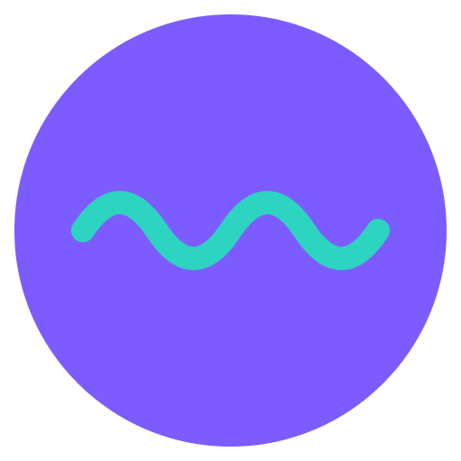

Centeryou est hors ligne
Impossible de joindre la version en ligne pour le moment. Tes données restent enregistrées localement sur cet ordinateur : reconnecte-toi à Internet, puis réessaie — l'application se rouvrira automatiquement dès que la connexion sera de retour.